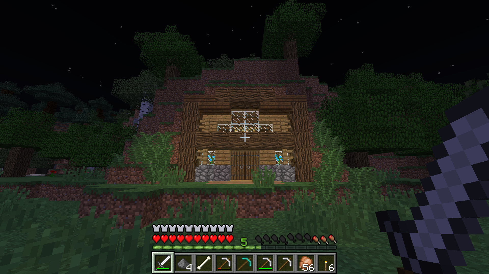
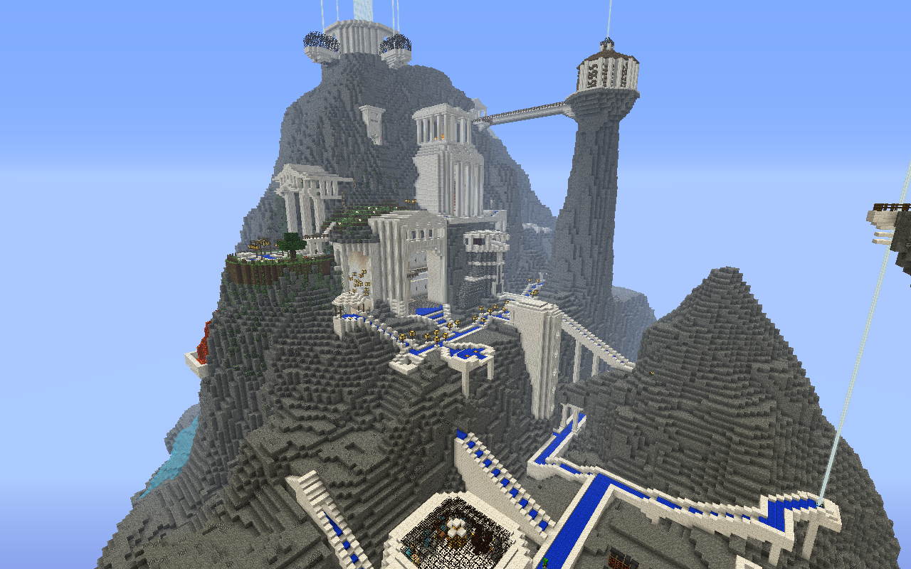
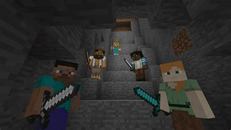

Introduction
Minecraft is a simple 3D game where players enter a block-based world that they can either try to survive in using survival mode, or create structures using creative mode.
Survival Mode
Survival Mode puts players inside a randomly generated world where they have to gain resources to build a house before night. Once nighttime arrives, entities like zombies and skeletons will start to spawn with the intent of killing the player. Creepers are another mob that can spawn at night, when the player gets too close to them, they will ignite themselves and begin to detonate.
Creative Mode
Players can also choose to play in Creative Mode where they have unlimited access to nearly any block and have certain abilities like flight. Building large structures or modifying the world on a large scale is much easier when using Creative Mode. Players do not have to worry about surviving or having to build a house in time as they won't be able to take damage when in this mode.
Multiplayer
Multiplayer is an option for minecraft plaers to play with others. Either by hosting the game on the local Lan for friends on the name network to join, or hosting a server for anyone with an internet connection to join.
Survival MultiPlayer
Survival MultiPlayer (or SMP for short), is when a server hosting a minecraft world uses survival mode and all the other players try to survive in it. One well known Multiplayer server is the Dream SMP, which has multiple well-known minecraft players hosted on it. Other examples of Minecaft SMP's are the Hermitcraft server, and the Shady Oaks SMP.
Bedrock or Java?
Minecraft has two different variants, one being Java Edition which is seen as the 'original' version of minecraft as it was what the creator, Notch, coding the game with initially.
The second variant is Bedrock Edition, which was created when Microsoft bought the game studio Mojang which creates Minecraft. Bedrock Edition is now available for IOS, Android OS, Mac OS, Windows, Linux, Chrome OS, Xbox, The Nintendo Switch, and Ipad OS.
Java Edition
Java Edition is coded in Java as the name suggests, it is only available for Windows, Mac OS, and Linux and needs a JRE or Java Runtime environment to run. Java Edition is feature rich, with updated combat system, more commands, and a better redstone system which is minecraft's version of electronics.
However, Java Edition is notorious for being 'slow' or 'inefficient' compared to Bedrock as the language used to code it, Java, is not a very efficient language for things like 3D games. Java Edition also lacks support on consoles like the Playstation Series, Xbox, and Nintendo Devices as none of them are able to run Java or have the right controls for it. Java Edition also has no support for controllers on it's own. It does however, have a flexible modding API which allows people to make mods that can enchance the game performance and experience like Optifine, or give the game more features.
Bedrock Edition
Bedrock Edition has the advantages of cross-platform support as it is availabe for a number of consoles and devices, along with having 'beta' updates for people to try out before they make it to Java Edition. Bedrock is also known to be much more efficient than Java as it is coded with more efficient and fast languages like c and c++ as they can be used to compile for a number of platforms with the right compiler. Because of it's higher efficiency compared to Java edition, it can be played on hardware and devices that have less performance or can have varying computational power like smartphones. Bedrock Editon servers are also much more efficient as hypixel, which used to host their servers using java, have switched to bedrock as they could only hold nearly ten times the amout of players using bedrock.
However, Bedrock Edition still uses the old Java 1.8 fight mechanics which may be an advantage, or disadvantage to some. It also has a redstone system that does not work properly, Java Edition's redstone allows for things like hidden doors and flying machines, but Bedrock Edition does not allow, or makes it much more difficult to implement these things due to the different redstone system. Bedrock edition also removes some features in Java Edition like being able to build at the top of the Nether and special items like the debug stick. Bedrock Edition lacks the same modding interface as Java Edition does and as a result, it has no mods availabe, the only way to get mods is to use resource packs which are very limited in terms of capability compared to Java Edition mods.
Education Edition

Education edition is a variant of Bedrock Edition used for education purposes. It has addons and other resources in-game that allow it to be more educative, like elements being added to the game to teach chemistry and an interface to code an entity to move or perform actions using block-based coding or Python.
Education Edition also has the added efficiency of Bedrock Edition as they use the same game engine, and also has support on more devices than Java edition does. Supported platforms are Mac OS, Windows, Ipad OS, and Chrome OS. Education Edition can only be activated or used by an email that belongs to an education organisation or an email that is part of an education system that has registered with minecraft education edition.